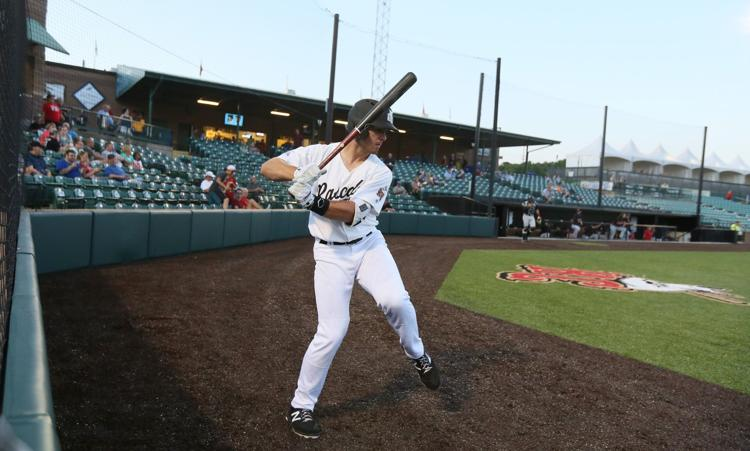
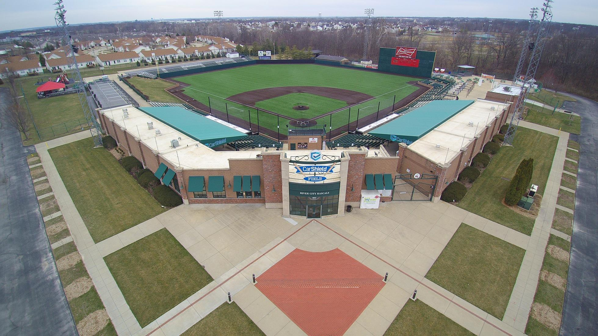
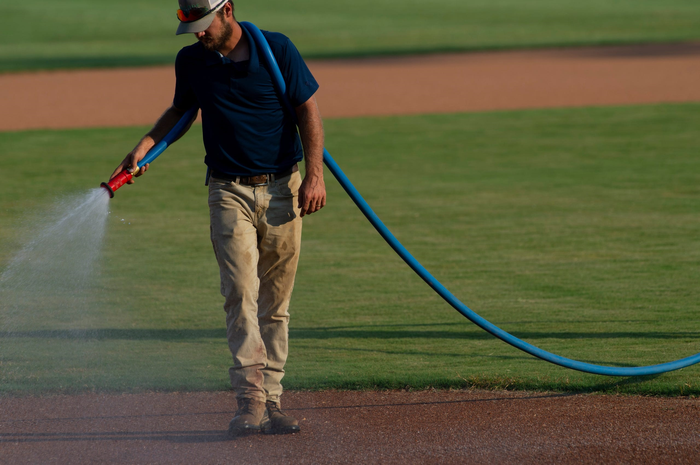
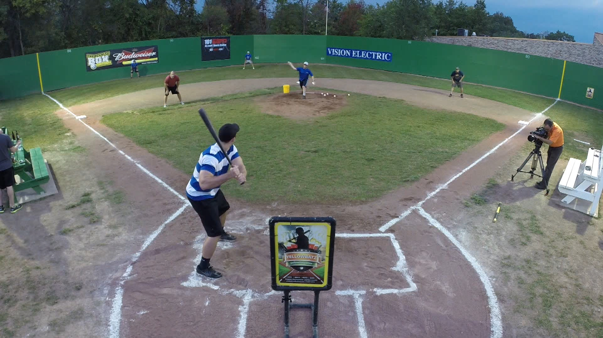
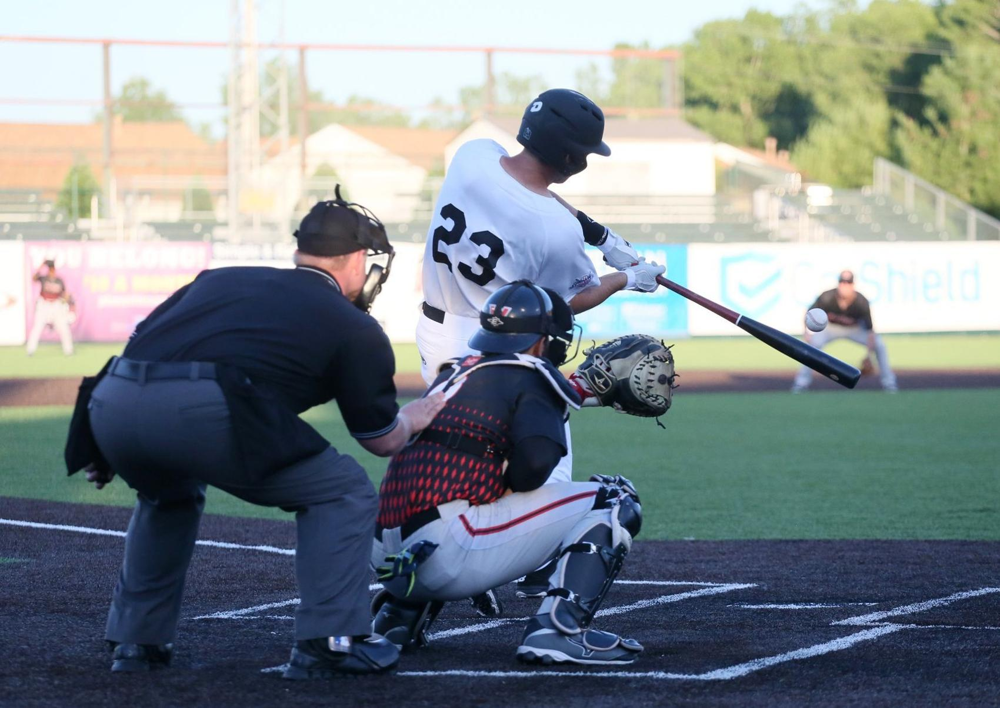
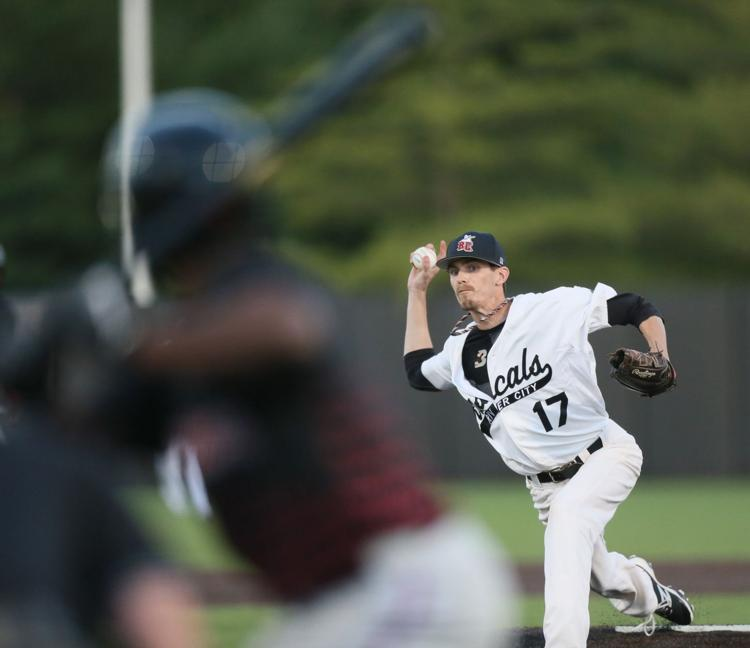

<div class='landing-page-outside-container'>
    <header>
        <div class='header-content'>
            <h3>Welcome to Stat Tracker!</h3>
       
            <p>Easily track your season statistics.</p>

            <button>Register</button>
        </div>
    </header>

    <!-- <section class='helper'>
        <div class='steps'>
            <span class='number'>1.</span>
            <span>Create your account</span>
        </div>

        <div class='steps'>
            <span class='number'>2.</span>
            Create your season
        </div>
        <div class='steps'>
            <span class='number'>3.</span>
            Add the teams and players
        </div>
        <div class='steps'>
            <span class='number'>4.</span>
            Easily track your season statistics
        </div>
    </section> -->

    <section class='screenshot-section'>
        <p style="color:white">2 screenshots will be in here</p>
    </section>

    <section class='picture-section'>
        
        
        
        
        
        
    </section>
</div>